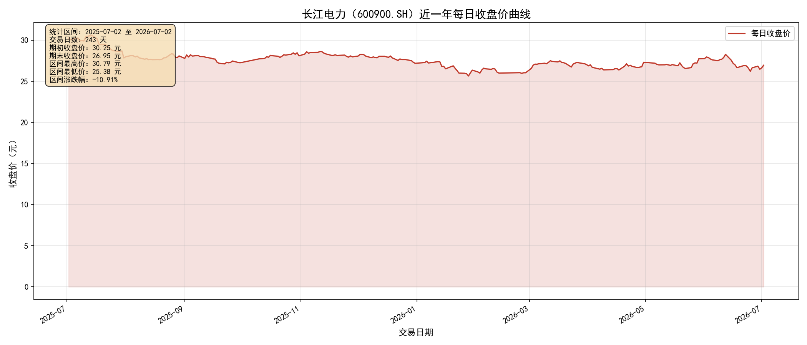

本任务使用 Tushare Pro 金融数据接口，以 pro.daily 接口获取
长江电力（600900.SH） 近一年（2025-07-02 至 2026-07-02）的日线行情数据，
使用 matplotlib 绘制每日收盘价曲线图，并将原始数据保存为 CSV 文件，
以备后续量化策略任务使用。

图 1 长江电力（600900.SH）2025-07-02 至 2026-07-02 每日收盘价曲线
| 交易日 | 开盘 | 最高 | 最低 | 收盘 | 昨收 | 涨跌额 | 涨跌幅(%) | 成交量(手) | 成交额(千元) |
|---|---|---|---|---|---|---|---|---|---|
| 2025-07-02 | 30.40 | 30.48 | 30.22 | 30.25 | 30.37 | -0.12 | -0.40 | 571,835 | 1,734,050 |
| 2025-07-03 | 30.26 | 30.28 | 29.85 | 30.09 | 30.25 | -0.16 | -0.53 | 936,811 | 2,811,204 |
| 2025-07-04 | 30.06 | 30.29 | 30.01 | 30.16 | 30.09 | +0.07 | +0.23 | 679,228 | 2,048,728 |
| 2025-07-07 | 30.24 | 30.28 | 30.07 | 30.26 | 30.16 | +0.10 | +0.33 | 508,278 | 1,534,746 |
| 2025-07-08 | 30.27 | 30.27 | 29.91 | 29.92 | 30.26 | -0.34 | -1.12 | 1,073,286 | 3,219,639 |
| 交易日 | 开盘 | 最高 | 最低 | 收盘 | 昨收 | 涨跌额 | 涨跌幅(%) | 成交量(手) | 成交额(千元) |
|---|---|---|---|---|---|---|---|---|---|
| 2026-06-26 | 26.25 | 26.72 | 26.15 | 26.65 | 26.22 | +0.43 | +1.64 | 1,282,652 | 3,395,742 |
| 2026-06-29 | 26.55 | 26.90 | 26.26 | 26.84 | 26.65 | +0.19 | +0.71 | 1,232,579 | 3,286,300 |
| 2026-06-30 | 26.71 | 26.84 | 26.38 | 26.47 | 26.84 | -0.37 | -1.38 | 1,022,777 | 2,712,033 |
| 2026-07-01 | 26.44 | 26.72 | 26.36 | 26.64 | 26.47 | +0.17 | +0.64 | 909,398 | 2,417,437 |
| 2026-07-02 | 26.79 | 27.09 | 26.55 | 26.95 | 26.64 | +0.31 | +1.16 | 1,400,553 | 3,761,293 |
# -*- coding: utf-8 -*-
"""
TASK1 - 任务三：Tushare 获取长江电力过去一年每日交易数据
"""
import os
import tushare as ts
import pandas as pd
import matplotlib.pyplot as plt
from datetime import datetime, timedelta
TOKEN = 'eedeac8183a4726f28d85aade5731a3182166105900e5ddfd6c8b402'
TS_CODE = '600900.SH' # 长江电力
NAME = '长江电力'
OUTDIR = r'C:\Users\LENOVO\Desktop\lfq1234\TASK1'
# 1) 获取数据
ts.set_token(TOKEN)
pro = ts.pro_api()
end = datetime.today().strftime('%Y%m%d')
start = (datetime.today() - timedelta(days=365)).strftime('%Y%m%d')
df = pro.daily(ts_code=TS_CODE, start_date=start, end_date=end)
df = df.sort_values('trade_date').reset_index(drop=True)
df['trade_date'] = pd.to_datetime(df['trade_date'])
# 2) 绘制收盘价曲线
plt.rcParams['font.sans-serif'] = ['SimHei']
plt.rcParams['axes.unicode_minus'] = False
fig, ax = plt.subplots(figsize=(14, 6))
ax.plot(df['trade_date'], df['close'], color='#C0392B', linewidth=1.5, label='每日收盘价')
ax.fill_between(df['trade_date'], df['close'], alpha=0.15, color='#C0392B')
ax.set_title(f'{NAME}（{TS_CODE}）近一年每日收盘价曲线', fontsize=14, fontweight='bold')
ax.set_xlabel('交易日期'); ax.set_ylabel('收盘价（元）')
ax.legend(); ax.grid(True, alpha=0.3); fig.autofmt_xdate()
fig.tight_layout()
fig.savefig(os.path.join(OUTDIR, 'cjdl_close_price.png'), dpi=150)
# 3) 保存 CSV（utf-8-sig 防止 Excel 打开中文乱码）
df.to_csv(os.path.join(OUTDIR, 'cjdl_600900_2025-2026.csv'),
index=False, encoding='utf-8-sig')
pro.daily 接口成功拉取 600900.SH 长江电力近一年共 243 个交易日的 OHLC 行情数据；cjdl_600900_2025-2026.csv，Excel 可直接打开，列名与 Tushare 标准字段一致（ts_code、trade_date、open、high、low、close、pre_close、change、pct_chg、vol、amount），便于后续量化策略任务直接读取。